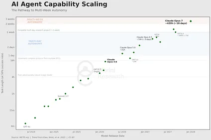
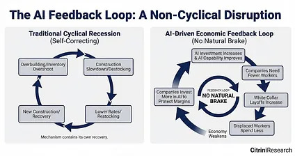
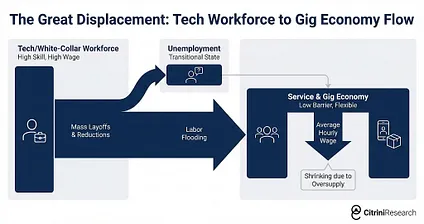
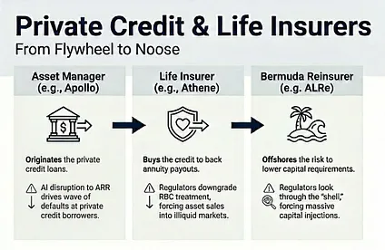
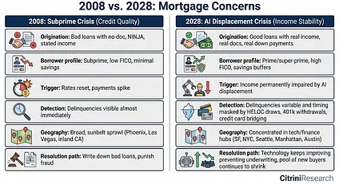
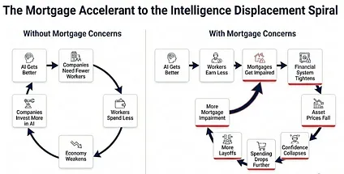
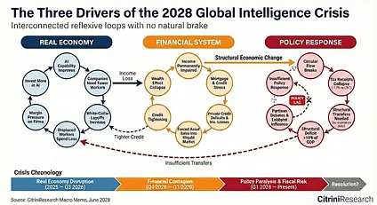

THE 2028 GLOBAL INTELLIGENCE CRISIS
A Thought Exercise in Financial History, from the Future
Preface
What if our AI bullishness continues to be right...and what if that’s actually bearish?
What follows is a scenario, not a prediction. This isn’t bear porn or AI doomer fan-fiction. The sole intent of this piece is modeling a scenario that’s been relatively underexplored. Our friend Alap Shah posed the question, and together we brainstormed the answer. We wrote this part, and he’s written two others you can find here.
Hopefully, reading this leaves you more prepared for potential left tail risks as AI makes the economy increasingly weird.
This is the CitriniResearch Macro Memo from June 2028, detailing the progression and fallout of the Global Intelligence Crisis.
Macro Memo
The Consequences of Abundant Intelligence
CitriniResearch
February 22nd, 2026 June 30th, 2028
The unemployment rate printed 10.2% this morning, a 0.3% upside surprise. The market sold off 2% on the number, bringing the cumulative drawdown in the S&P to 38% from its October 2026 highs.
Traders have grown numb. Six months ago, a print like this would have triggered a circuit breaker.
Two years.That’s all it took to get from “contained” and “sector-specific” to an economy that no longer resembles the one any of us grew up in. This quarter’s macro memo is our attempt to reconstruct the sequence - a post-mortem on the pre-crisis economy.
The euphoria was palpable. By October 2026, the S&P 500 flirted with 8000, the Nasdaq broke above 30k. The initial wave of layoffs due to human obsolescence began in early 2026, and they did exactly what layoffs are supposed to. Margins expanded, earnings beat, stocks rallied. Record-setting corporate profits were funneled right back into AI compute.
The headline numbers were still great. Nominal GDP repeatedly printed mid-to-high single-digit annualized growth. Productivity was booming. Real output per hour rose at rates not seen since the 1950s, driven by AI agents that don’t sleep, take sick days or require health insurance.
The owners of compute saw their wealth explode as labor costs vanished. Meanwhile, real wage growth collapsed. Despite the administration’s repeated boasts of record productivity, white-collar workers lost jobs to machines and were forced into lower-paying roles.
When cracks began appearing in the consumer economy, economic pundits popularized the phrase “ Ghost GDP “: output that shows up in the national accounts but never circulates through the real economy.
In every way AI was exceeding expectations, and the market was AI. The only problem… the economy was not.
It should have been clear all along that a single GPU cluster in North Dakota generating the output previously attributed to 10,000 white-collar workers in midtown Manhattan is more economic pandemic than economic panacea. The velocity of money flatlined. The human-centric consumer economy, 70% of GDP at the time, withered. We probably could have figured this out sooner if we just asked how much money machines spend on discretionary goods. (Hint: it’s zero.)
AI capabilities improved, companies needed fewer workers, white collar layoffs increased, displaced workers spent less, margin pressure pushed firms to invest more in AI, AI capabilities improved…
It was a negative feedback loop with no natural brake. The human intelligence displacement spiral. White-collar workers saw their earnings power (and, rationally, their spending) structurally impaired. Their incomes were the bedrock of the $13 trillion mortgage market - forcing underwriters to reassess whether prime mortgages are still money good.
Seventeen years without a real default cycle had left privates bloated with PE-backed software deals that assumed ARR would remain recurring. The first wave of defaults due to AI disruption in mid-2027 challenged that assumption.
This would have been manageable if the disruption remained contained to software, but it didn’t. By the end of 2027, it threatened every business model predicated on intermediation. Swaths of companies built on monetizing friction for humans disintegrated.
The system turned out to be one long daisy chain of correlated bets on white-collar productivity growth. The November 2027 crash only served to accelerate all of the negative feedback loops already in place.
We’ve been waiting for “bad news is good news” for almost a year now. The government is starting to consider proposals, but public faith in the ability of the government to stage any sort of rescue has dwindled. Policy response has always lagged economic reality, but lack of a comprehensive plan is now threatening to accelerate a deflationary spiral.
How It Started
In late 2025, agentic coding tools took a step function jump in capability.
A competent developer working with Claude Code or Codex could now replicate the core functionality of a mid-market SaaS product in weeks. Not perfectly or with every edge case handled, but well enough that the CIO reviewing a $500k annual renewal started asking the question “what if we just built this ourselves?”
Fiscal years mostly line up with calendar years, so 2026 enterprise spend had been set in Q4 2025, when “agentic AI” was still a buzzword. The mid-year review was the first time procurement teams were making decisions with visibility into what these systems could actually do. Some watched their own internal teams spin up prototypes replicating six-figure SaaS contracts in weeks.
That summer, we spoke with a procurement manager at a Fortune 500. He told us about one of his budget negotiations. The salesperson had expected to run the same playbook as last year: a 5% annual price increase, the standard “your team depends on us” pitch. The procurement manager told him he’d been in conversations with OpenAI about having their “forward deployed engineers” use AI tools to replace the vendor entirely. They renewed at a 30% discount. That was a good outcome, he said. The “long-tail of SaaS”, like Monday.com, Zapier and Asana, had it much worse.
Investors were prepared - expectant, even - that the long tail would be hit hard. They may have made up a third of spending for the typical enterprise stack, but they were obviously exposed. The systems of record, however, were supposed to be safe from disruption.
It wasn’t until ServiceNow’s Q3 26 report that the mechanism of reflexivity became clearer.
SERVICENOW NET NEW ACV GROWTH DECELERATES TO 14% FROM 23%; ANNOUNCES 15% WORKFORCE REDUCTION AND ‘STRUCTURAL EFFICIENCY PROGRAM’; SHARES FALL 18% | Bloomberg, October 2026
SaaS wasn’t “dead”. There was still a cost-benefit-analysis to running and supporting in-house builds. But in-house was an option, and that factored into pricing negotiations. Perhaps more importantly, the competitive landscape had changed. AI had made it easier to develop and ship new features, so differentiation collapsed. Incumbents were in a race to the bottom on pricing - a knife-fight with both each other and with the new crop of upstart challengers that popped up. Emboldened by the leap in agentic coding capabilities and with no legacy cost structure to protect, these aggressively took share.
The interconnected nature of these systems weren’t fully appreciated until this print, either. ServiceNow sold seats. When Fortune 500 clients cut 15% of their workforce, they cancelled 15% of their licenses. The same AI-driven headcount reductions that were boosting margins at their customers were mechanically destroying their own revenue base.
The company that sold workflow automation was being disrupted by better workflow automation, and its response was to cut headcount and use the savings to fund the very technology disrupting it.
What else were they supposed to do? Sit still and die slower? The companies most threatened by AI became AI’s most aggressive adopters.
This sounds obvious in hindsight, but it really wasn’t at the time (at least to me). The historical disruption model said incumbents resist new technology, they lose share to nimble entrants and die slowly. That’s what happened to Kodak, to Blockbuster, to BlackBerry. What happened in 2026 was different; the incumbents didn’t resist because they couldn’t afford to.
With stocks down 40-60% and boards demanding answers, the AI-threatened companies did the only thing they could. Cut headcount, redeploy the savings into AI tools, use those tools to maintain output with lower costs.
Each company’s individual response was rational. The collective result was catastrophic. Every dollar saved on headcount flowed into AI capability that made the next round of job cuts possible.
Software was only the opening act. What investors missed while they debated whether SaaS multiples had bottomed was that the reflexive loop had already escaped the software sector. The same logic that justified ServiceNow cutting headcount applied to every company with a white-collar cost structure.
When Friction Went to Zero
By early 2027, LLM usage had become default. People were using AI agents who didn’t even know what an AI agent was, in the same way people who never learned what “cloud computing” was used streaming services. They thought of it the same way they thought of autocomplete or spell-check - a thing their phone just did now.
Qwen’s open-source agentic shopper was the catalyst for AI handling consumer decisions. Within weeks, every major AI assistant had integrated some agentic commerce feature. Distilled models meant these agents could run on phones and laptops, not just cloud instances, reducing the marginal cost of inference significantly.
The part that should have unsettled investors more than it did was that these agents didn’t wait to be asked. They ran in the background according to the user’s preferences. Commerce stopped being a series of discrete human decisions and became a continuous optimization process, running 24/7 on behalf of every connected consumer. By March 2027, the median individual in the United States was consuming 400,000 tokens per day - 10x since the end of 2026.
The next link in the chain was already breaking.
Intermediation.
Over the past fifty years, the U.S. economy built a giant rent-extraction layer on top of human limitations: things take time, patience runs out, brand familiarity substitutes for diligence, and most people are willing to accept a bad price to avoid more clicks. Trillions of dollars of enterprise value depended on those constraints persisting.
It started out simple enough. Agents removed friction.
Subscriptions and memberships that passively renewed despite months of disuse. Introductory pricing that sneakily doubled after the trial period. Each one was rebranded as a hostage situation that agents could negotiate. The average customer lifetime value, the metric the entire subscription economy was built on, distinctly declined.
Consumer agents began to change how nearly all consumer transactions worked.
Humans don’t really have the time to price-match across five competing platforms before buying a box of protein bars. Machines do.
Travel booking platforms were an early casualty, because they were the simplest. By Q4 2026, our agents could assemble a complete itinerary (flights, hotels, ground transport, loyalty optimization, budget constraints, refunds) faster and cheaper than any platform.
Insurance renewals, where the entire renewal model depended on policyholder inertia, were reformed. Agents that re-shop your coverage annually dismantled the 15-20% of premiums that insurers earned from passive renewals.
Financial advice. Tax prep. Routine legal work. Any category where the service provider’s value proposition was ultimately “I will navigate complexity that you find tedious” was disrupted, as the agents found nothing tedious.
Even places we thought insulated by the value of human relationships proved fragile. Real estate, where buyers had tolerated 5-6% commissions for decades because of information asymmetry between agent and consumer, crumbled once AI agents equipped with MLS access and decades of transaction data could replicate the knowledge base instantly. A sell-side piece from March 2027 titled it “agent on agent violence”. The median buy-side commission in major metros had compressed from 2.5-3% to under 1%, and a growing share of transactions were closing with no human agent on the buy side at all.
We had overestimated the value of “human relationships”. Turns out that a lot of what people called relationships was simply friction with a friendly face.
That was just the start of the disruption for the intermediation layer. Successful companies had spent billions to effectively exploit quirks of consumer behavior and human psychology that didn’t matter anymore.
Machines optimizing for price and fit do not care about your favorite app or the websites you’ve been habitually opening for the last four years, nor feel the pull of a well-designed checkout experience. They don’t get tired and accept the easiest option or default to “I always just order from here”.
That destroyed a particular kind of moat: habitual intermediation.
DoorDash (DASH US) was the poster child.
Coding agents had collapsed the barrier to entry for launching a delivery app. A competent developer could deploy a functional competitor in weeks, and dozens did, enticing drivers away from DoorDash and Uber Eats by passing 90-95% of the delivery fee through to the driver. Multi-app dashboards let gig workers track incoming jobs from twenty or thirty platforms at once, eliminating the lock-in that the incumbents depended on. The market fragmented overnight and margins compressed to nearly nothing.
Agents accelerated both sides of the destruction. They enabled the competitors and then they used them. The DoorDash moat was literally “you’re hungry, you’re lazy, this is the app on your home screen.” An agent doesn’t have a home screen. It checks DoorDash, Uber Eats, the restaurant’s own site, and twenty new vibe-coded alternatives so it can pick the lowest fee and fastest delivery every time.
Habitual app loyalty, the entire basis of the business model, simply didn’t exist for a machine.
This was oddly poetic, as perhaps the only example in this entire saga of agents doing a favor for the soon-to-be-displaced white collar workers. When they ended up as delivery drivers, at least half their earnings weren’t going to Uber and DoorDash. Of course, this favor from technology didn’t last for long as autonomous vehicles proliferated.
Once agents controlled the transaction, they went looking for bigger paperclips.
There was only so much price-matching and aggregating to do. The biggest way to repeatedly save the user money (especially when agents started transacting among themselves) was to eliminate fees. In machine-to-machine commerce, the 2-3% card interchange rate became an obvious target.
Agents went looking for faster and cheaper options than cards. Most settled on using stablecoins via Solana or Ethereum L2s, where settlement was near-instant and the transaction cost was measured in fractions of a penny.
MASTERCARD Q1 2027: NET REVENUES +6% Y/Y; PURCHASE VOLUME GROWTH SLOWS TO +3.4% Y/Y FROM +5.9% PRIOR QUARTER; MANAGEMENT NOTES “AGENT-LED PRICE OPTIMIZATION” AND “PRESSURE IN DISCRETIONARY CATEGORIES” | Bloomberg, April 29 2027
Mastercard’s Q1 2027 report was the point of no return. Agentic commerce went from being a product story to a plumbing story. MA dropped 9% the following day. Visa did too, but pared losses after analysts pointed out its stronger positioning in stablecoin infrastructure.

Agentic commerce routing around interchange posed a far greater risk to card-focused banks and mono-line issuers, who collected the majority of that 2-3% fee and had built entire business segments around rewards programs funded by the merchant subsidy.
American Express (AXP US) was hit hardest; a combined headwind from white-collar workforce reductions gutting its customer base and agents routing around interchange gutting its revenue model. Synchrony (SYF US), Capital One (COF US) and Discover (DFS US) all fell more than 10% over the following weeks, as well.
Their moats were made of friction. And friction was going to zero.
From Sector Risk to Systemic Risk
Through 2026, markets treated negative AI impact as a sector story. Software and consulting were getting crushed, payments and other toll booths were wobbly, but the broader economy seemed fine. The labor market, while softening, was not in freefall. The consensus view was that creative destruction was part of any technological innovation cycle. It would be painful in pockets, but the overall net positives from AI would outweigh any negatives.
Our January 2027 macro memo argued this was the wrong mental model. The US economy is a white-collar services economy. White-collar workers represented 50% of employment and drove roughly 75% of discretionary consumer spending. The businesses and jobs that AI was chewing up were not tangential to the US economy, they were the US economy.
“Technological innovation destroys jobs and then creates even more”. This was the most popular and convincing counter-argument at the time. It was popular and convincing because it’d been right for two centuries. Even if we couldn’t conceive of what the future jobs would be, they would surely arrive.
ATMs made branches cheaper to operate so banks opened more of them and teller employment rose for the next twenty years. The internet disrupted travel agencies, the Yellow Pages, brick-and-mortar retail, but it invented entirely new industries in their place that conjured new jobs.
Every new job, however, required a human to perform it.
AI is now a general intelligence that improves at the very tasks humans would redeploy to. Displaced coders cannot simply move to “AI management” because AI is already capable of that.
Today, AI agents handle many-weeks-long research and development tasks. The exponential steamrolled our conceptions of what was possible, even though every year Wharton professors tried to fit the data to a new sigmoid.

They write essentially all code. The highest performing of them are substantially smarter than almost all humans at almost all things. And they keep getting cheaper.
AI has created new jobs. Prompt engineers. AI safety researchers. Infrastructure technicians. Humans are still in the loop, coordinating at the highest level or directing for taste. For every new role AI created, though, it rendered dozens obsolete. The new roles paid a fraction of what the old ones did.
U.S. JOLTS: JOB OPENINGS FALL BELOW 5.5M; UNEMPLOYED-TO-OPENINGS RATIO CLIMBS TO ~1.7, HIGHEST SINCE AUG 2020 | Bloomberg, Oct 2026
The hiring rate had been anemic all year, but October ‘26 JOLTS print provided some definitive data. Job openings fell below 5.5 million, a 15% decline YoY.
INDEED: POSTINGS FALL SHARPLY IN SOFTWARE, FINANCE, CONSULTING AS “PRODUCTIVITY INITIATIVES” SPREAD | Indeed Hiring Lab, Nov–Dec 2026
White-collar openings were collapsing while blue-collar openings remained relatively stable (construction, healthcare, trades). The churn was in the jobs that write memos (we are, somehow, still in business), approve budgets, and keep the middle layers of the economy lubricated. Real wage growth in both cohorts, however, had been negative for the majority of the year and kept declining.
The equity market still cared less about JOLTS than it did the news that all of GE Vernova’s turbine capacity was now sold out until 2040, it ambled sideways in a tug of war between negative macro news with positive AI infrastructure headlines.
The bond market (always smarter than equities, or at least less romantic) began pricing the consumption hit, however. The 10-year yield began a descent from 4.3% to 3.2% over the following four months. Still, the headline unemployment rate did not blow out, the composition nuance was still lost on some.
In a normal recession, the cause eventually self-corrects. Overbuilding leads to a construction slowdown, which leads to lower rates, which leads to new construction. Inventory overshoot leads to destocking, which leads to restocking. The cyclical mechanism contains within it its own seeds of recovery.
This cycle’s cause was not cyclical.

AI got better and cheaper. Companies laid off workers, then used the savings to buy more AI capability, which let them lay off more workers. Displaced workers spent less. Companies that sell things to consumers sold fewer of them, weakened, and invested more in AI to protect margins. AI got better and cheaper.
A feedback loop with no natural brake.
The intuitive expectation was that falling aggregate demand would slow the AI buildout. It didn’t, because this wasn’t hyperscaler-style CapEx. It was OpEx substitution. A company that had been spending $100M a year on employees and $5M on AI now spent $70M on employees and $20M on AI. AI investment increased by multiples, but it occurred as a reduction in total operating costs. Every company’s AI budget grew while its overall spending shrank.
The irony of this was that the AI infrastructure complex kept performing even as the economy it was disrupting began deteriorating. NVDA was still posting record revenues. TSM was still running at 95%+ utilization. The hyperscalers were still spending $150-200 billion per quarter on data center capex. Economies that were purely convex to this trend, like Taiwan and Korea, outperformed massively.
India was the inverse. The country’s IT services sector exported over $200 billion annually, the single largest contributor to India’s current account surplus and the offset that financed its persistent goods trade deficit. The entire model was built on one value proposition: Indian developers cost a fraction of their American counterparts. But the marginal cost of an AI coding agent had collapsed to, essentially, the cost of electricity. TCS, Infosys and Wipro saw contract cancellations accelerate through 2027. The rupee fell 18% against the dollar in four months as the services surplus that had anchored India’s external accounts evaporated. By Q1 2028, the IMF had begun “preliminary discussions” with New Delhi.
The engine that caused the disruption got better every quarter, which meant the disruption accelerated every quarter. There was no natural floor to the labor market.
In the US, we weren’t asking about how the bubble would burst in AI infrastructure anymore. We were asking what happens to a consumer-credit economy when consumers are being replaced with machines.
The Intelligence Displacement Spiral
2027 was when the macroeconomic story stopped being subtle. The transmission mechanism from the previous twelve months of disjointed but clearly negative developments became obvious. You didn’t need to go into the BLS data. Just attend a dinner party with friends.
Displaced white-collar workers did not sit idle. They downshifted. Many took lower-paying service sector and gig economy jobs, which increased labor supply in those segments and compressed wages there too.
A friend of ours was a senior product manager at Salesforce in 2025. Title, health insurance, 401k, $180,000 a year. She lost her job in the third round of layoffs. After six months of searching, she started driving for Uber. Her earnings dropped to $45,000. The point is less the individual story and more the second-order math. Multiply this dynamic by a few hundred thousand workers across every major metro. Overqualified labor flooding the service and gig economy pushed down wages for existing workers who were already struggling. Sector-specific disruption metastasized into economy-wide wage compression.

The pool of remaining human-centric had another correction ahead of it, happening while we write this. As autonomous delivery and self-driving vehicles work their way through the gig economy that absorbed the first wave of displaced workers.
By February 2027, it was clear that still employed professionals were spending like they might be next. They were working twice as hard (mostly with the help of AI) just to not get fired, hopes of promotion or raises were gone. Savings rates ticked higher and spending softened.
The most dangerous part was the lag. High earners used their higher-than-average savings to maintain the appearance of normalcy for two or three quarters. The hard data didn’t confirm the problem until it was already old news in the real economy. Then came the print that broke the illusion.
U.S. INITIAL JOBLESS CLAIMS SURGE TO 487,000, HIGHEST SINCE APRIL 2020; Department of Labor, Q3 2027
Initial claims surged to 487,000, the highest since April 2020. ADP and Equifax confirmed that the overwhelming majority of new filings were from white-collar professionals.
The S&P dropped 6% over the following week. Negative macro started winning the tug of war.
In a normal recession, job losses are broadly distributed. Blue-collar and white-collar workers share the pain roughly in proportion to each segment’s share of employment. The consumption hit is also broadly distributed, and it shows up quickly in the data because lower-income workers have higher marginal propensities to consume.
In this cycle, the job losses have been concentrated in the upper deciles of the income distribution. They are a relatively small share of total employment, but they drive a wildly disproportionate share of consumer spending. The top 10% of earners account for more than 50% of all consumer spending in the United States. The top 20% account for roughly 65%. These are the people who buy the houses, the cars, the vacations, the restaurant meals, the private school tuition, the home renovations. They are the demand base for the entire consumer discretionary economy.
When these workers lost their jobs, or took 50% pay cuts to move into available roles, the consumption hit was enormous relative to the number of jobs lost. A 2% decline in white-collar employment translated to something like a 3-4% hit to discretionary consumer spending. Unlike blue-collar job losses, which tend to hit immediately (you get laid off from the factory, you stop spending next week), white-collar job losses have a lagged but deeper impact because these workers have savings buffers that allow them to maintain spending for a few months before the behavioral shift kicks in.
By Q2 2027, the economy was in recession. The NBER would not officially date the start until months later (they never do) but the data was unambiguous - we’d had two consecutive quarters of negative real GDP growth. But it wasn’t a “financial crisis”…yet.
The Daisy Chain of Correlated Bets
Private credit had grown from under $1 trillion in 2015 to over $2.5 trillion by 2026. A meaningful share of that capital had been deployed into software and technology deals, many of them leveraged buyouts of SaaS companies at valuations that assumed mid-teens revenue growth in perpetuity.
Those assumptions died somewhere between the first agentic coding demo and the Q1 2026 software crash, but the marks didn’t seem to realize they were dead.
As many public SaaS companies traded to 5-8x EBITDA, PE-backed software companies sat on balance sheets at marks reflecting acquisition valuations on multiples of revenue that didn’t exist anymore. Managers eased the marks down gradually, 100 cents, 92, 85, all while public comps said 50.
MOODY’S DOWNGRADES $18B OF PE-BACKED SOFTWARE DEBT ACROSS 14 ISSUERS, CITING ‘SECULAR REVENUE HEADWINDS FROM AI-DRIVEN COMPETITIVE DISRUPTION’; LARGEST SINGLE-SECTOR ACTION SINCE ENERGY IN 2015 | Moody’s Investors Service, April 2027
Everyone remembers what happened after the downgrade. Industry veterans had already seen the playbook following the 2015 energy downgrades.
Software-backed loans began defaulting in Q3 2027. PE portfolio companies in information services and consulting followed. Several multi-billion dollar LBOs of well-known SaaS companies entered restructuring.
Zendesk was the smoking gun.
ZENDESK MISSES DEBT COVENANTS AS AI-DRIVEN CUSTOMER SERVICE AUTOMATION ERODES ARR; $5B DIRECT LENDING FACILITY MARKED TO 58 CENTS; LARGEST PRIVATE CREDIT SOFTWARE DEFAULT ON RECORD | Financial Times, September 2027
In 2022, Hellman & Friedman and Permira had taken Zendesk private for $10.2 billion. The debt package was $5 billion in direct lending, the largest ARR-backed facility in history at the time, led by Blackstone with Apollo, Blue Owl and HPS all in the lending group. The loan was explicitly structured around the assumption that Zendesk’s annual recurring revenue would remain recurring. At roughly 25x EBITDA, the leverage only made sense if it did.
By mid-2027, it didn’t.
AI agents had been handling customer service autonomously for the better part of a year. The category Zendesk had defined (ticketing, routing, managing human support interactions) was already replaced by systems that resolved issues without generating a ticket at all. The Annualized Recurring Revenue the loan was underwritten against was no longer recurring, it was just revenue that hadn’t left yet.
The largest ARR-backed loan in history became the largest private credit software default in history. Every credit desk asked the same question at once: who else has a secular headwind disguised as a cyclical one?
But here’s what the consensus got right, at least initially: this should have been survivable.
Private credit is not 2008 banking. The whole architecture was explicitly designed to avoid forced selling. These are closed-end vehicles with locked-up capital. LPs committed for seven to ten years. There are no depositors to run, no repo lines to pull. The managers could sit on impaired assets, work them out over time, and wait for recoveries. Painful, but manageable. The system was such that it was supposed to bend, not break.
Executives at Blackstone, KKR and Apollo cited software exposure of 7-13% of assets. Containable. Every sell-side note and fintwit credit account said the same thing: private credit has permanent capital. They could absorb losses that would otherwise blow up a levered bank.
Permanent capital. The phrase showed up in every earnings call and investor letter meant to reassure. It became a mantra. And like most mantras, nobody paid attention to the finer details. Here’s what it actually meant…
Over the prior decade, the large alternative asset managers had acquired life insurance companies and turned them into funding vehicles. Apollo bought Athene. Brookfield bought American Equity. KKR took Global Atlantic. The logic was elegant: annuity deposits provided a stable, long-duration liability base. The managers invested those deposits into the private credit they originated and got paid twice, earning spread over on the insurance side and management fees on the asset management side. A fee-on-fee perpetual motion machine that worked beautifully under one condition.
The private credit had to be money good.
The losses hit balance sheets built to hold illiquid assets against long-duration obligations. The “permanent capital” that was supposed to make the system resilient was not some abstract pool of patient institutional money and sophisticated investors taking sophisticated risk. It was the savings of American households, “Main Street”, structured as annuities invested in the same PE-backed software and technology paper that was now defaulting. The locked-up capital that couldn’t run was life insurance policyholder money, and the rules are a bit different there.
Compared to the banking system, insurance regulators had been docile - even complacent - but this was the wake-up call. Already uneasy about private credit concentrations at life insurers, they began downgrading the risk-based capital treatment of these assets. That forced the insurers to either raise capital or sell assets, neither of which was possible at attractive terms in a market already seizing up.
NEW YORK, IOWA STATE REGULATORS MOVE TO TIGHTEN CAPITAL TREATMENT FOR CERTAIN PRIVATELY RATED CREDIT HELD BY LIFE INSURERS; NAIC GUIDANCE EXPECTED TO INCREASE RBC FACTORS AND TRIGGER ADDITIONAL SVO SCRUTINY | Reuters, Nov 2027
When Moody’s put Athene’s financial strength rating on negative outlook, Apollo’s stock dropped 22% in two sessions. Brookfield, KKR, and the others followed.
It only got more complex from there. These firms hadn’t just created their insurer perpetual motion machine, they’d built an elaborate offshore architecture designed to maximize returns through regulatory arbitrage.The US insurer wrote the annuity, then ceded the risk to an affiliated Bermuda or Cayman reinsurer it also owned - set up to take advantage of more flexible regulation that permitted holding less capital against the same assets. That affiliate raised outside capital through offshore SPVs, a new layer of counterparties who invested alongside insurers into private credit originated by the same parent’s asset management arm.

The ratings agencies, some of which were themselves PE-owned, had not been paragons of transparency (surprising to virtually) no one. The spider web of different firms linked to different balance sheets was stunning in its opacity. When the underlying loans defaulted, the question of who actually bore the loss was genuinely unanswerable in real time.
The November 2027 crash marked the transition of perception from a potentially garden-variety cyclical drawdown to something much more uncomfortable. “A daisy chain of correlated bets on white collar productivity growth” was what Fed Chair Kevin Warsh called it during the FOMC’s emergency November meeting.
See, it is never the losses themselves that cause the crisis. It’s recognizing them. And there is another, much larger, much much more important area of finance for which we have grown fearful of that recognition.
The Mortgage Question
ZILLOW HOME VALUE INDEX FALLS 11% YOY IN SAN FRANCISCO, 9% IN SEATTLE, 8% IN AUSTIN; FANNIE MAE FLAGS ‘ELEVATED EARLY-STAGE DELINQUENCIES’ IN ZIP CODES WITH >40% TECH/FINANCE EMPLOYMENT | Zillow / Fannie Mae, June 2028
This month the Zillow Home Value Index fell 11% year-over-year in San Francisco, 9% in Seattle and 8% in Austin. This hasn’t been the only worrying headline. Last month, Fannie Mae flagged higher early-stage delinquency from jumbo-heavy ZIP codes - areas that are populated by 780+ credit score borrowers and typically “bulletproof”.
The US residential mortgage market is approximately $13 trillion. Mortgage underwriting is built on the fundamental assumption that the borrower will remain employed at roughly their current income level for the duration of the loan. For thirty years, in the case of most mortgages.
The white-collar employment crisis has threatened this assumption with a sustained shift in income expectations. We now have to ask a question that seemed absurd just 3 years ago - are prime mortgages money good?
Every prior mortgage crisis in US history has been driven by one of three things: speculative excess (lending to people who couldn’t afford the homes, as in 2008), interest rate shocks (rising rates making adjustable-rate mortgages unaffordable, as in the early 1980s), or localized economic shocks (a single industry collapsing in a single region, like oil in Texas in the 1980s or auto in Michigan in 2009).
None of these apply here. The borrowers in question are not subprime. They’re 780 FICO scores. They put 20% down. They have clean credit histories, stable employment records, and incomes that were verified and documented at origination. They were the borrowers that every risk model in the financial system treats as the bedrock of credit quality.
In 2008, the loans were bad on day one. In 2028, the loans were good on day one. The world just…changed after the loans were written. People borrowed against a future they can no longer afford to believe in.

In 2027, we flagged early signs of invisible stress: HELOC draws, 401(k) withdrawals, and credit card debt spiking while mortgage payments remained current. As jobs were lost, hiring was frozen and bonuses cut, these prime households saw their debt-to-income ratios double.
They could still make the mortgage payment, but only by stopping all discretionary spending, draining savings, and deferring any home maintenance or improvement. They were technically current on their mortgage, but just one more shock away from distress, and the trajectory of AI capabilities suggested that shock is coming. Then we saw delinquencies begin to spike in San Francisco, Seattle, Manhattan and Austin, even as the national average stayed within historical norms.
We’re now in the most acute stage. Falling home prices are manageable when the marginal buyer is healthy. Here, the marginal buyer is dealing with the same income impairment.
While concerns are building, we are not yet in a full-blown mortgage crisis. Delinquencies have risen but remain well below 2008 levels. It is the trajectory that’s the real threat.

The Intelligence Displacement Spiral now has two financial accelerants to the real economy’s decline.
Labor displacement, mortgage concerns, private market turmoil. Each reinforces the other. And the traditional policy toolkit (rate cuts, QE) can address the financial engine but cannot address the real economy engine, because the real economy engine is not driven by tight financial conditions. It’s driven by AI making human intelligence less scarce and less valuable. You can cut rates to zero and buy every MBS and all the defaulted software LBO debt in the market…
It won’t change the fact that a Claude agent can do the work of a $180,000 product manager for $200/month.
If these fears manifest, the mortgage market cracks in the back half of this year. In that scenario, we’d expect the current drawdown in equities to ultimately rival that of the GFC (57% peak-to-trough). This would bring the S&P500 to ~3500 - levels we haven’t seen since the month before the ChatGPT moment in November 2022.
What’s clear is that the income assumptions underlying $13 trillion in residential mortgages are structurally impaired. What isn’t is whether policy can intervene before the mortgage market fully processes what this means. We’re hopeful, but we can’t deny the reasons not to be.
The Battle Against Time
The first negative feedback loop was in the real economy: AI capability improves, payroll shrinks, spending softens, margins tighten, companies buy more capability, capability improves. Then it turned financial: income impairment hit mortgages, bank losses tightened credit, the wealth effect cracked, and the feedback loop sped up. And both of these have been exacerbated by an insufficient policy response from a government that seems, quite frankly, confused.

The system wasn’t designed for a crisis like this. The federal government’s revenue base is essentially a tax on human time. People work, firms pay them, the government takes a cut. Individual income and payroll taxes are the spine of receipts in normal years.
Through Q1 of this year, federal receipts were running 12% below CBO baseline projections. Payroll receipts are falling because fewer people are employed at prior compensation levels. Income tax receipts are falling because the incomes being earned are structurally lower. Productivity is surging, but the gains are flowing to capital and compute, not labor.
Labor’s share of GDP declined from 64% in 1974 to 56% in 2024, a four-decade grind lower driven by globalization, automation, and the steady erosion of worker bargaining power. In the four years since AI began its exponential improvement, that has dropped to 46%. The sharpest decline on record.
The output is still there. But it’s no longer routing through households on the way back to firms, which means it’s no longer routing through the IRS either. The circular flow is breaking, and the government is expected to step in to fix that.

As in every downturn, outlays rise just as receipts fall. The difference this time is that the spending pressure is not cyclical. Automatic stabilizers were built for temporary job losses, not structural displacement. The system is paying benefits that assume workers will be reabsorbed. Many will not, at least not at anything like their prior wage. During COVID, the government freely embraced 15% deficits, but it was understood to be temporary. The people who need government support today were not hit by a pandemic they’ll recover from. They were replaced by a technology that continues to improve.
The government needs to transfer more money to households at precisely the moment it is collecting less money from them in taxes.
The U.S. won’t default. It prints the currency it spends, the same currency it uses to pay back borrowers. But this stress has shown up elsewhere. Municipal bonds are showing worrying signs of dispersion in year-to-date performance. States without income tax have been okay, but general obligation munis issued by states dependent on income tax (majority blue states) began to price in some default risk. Politicos caught on quickly, and the debate over who gets bailed out has fallen along partisan lines.
The administration, to its credit, recognized the structural nature of the crisis early and began entertaining bipartisan proposals for what they’re calling the “Transition Economy Act”: a framework for direct transfers to displaced workers funded by a combination of deficit spending and a proposed tax on AI inference compute.
The most radical proposal on the table goes further. The “Shared AI Prosperity Act” would establish a public claim on the returns of the intelligence infrastructure itself, something between a sovereign wealth fund and a royalty on AI-generated output, with dividends funding household transfers. Private sector lobbyists have flooded the media with warnings about the slippery slope.
The politics behind the discussions have been grimly predictable, exacerbated by grandstanding and brinksmanship. The right calls transfers and redistribution Marxism and warns that taxing compute hands the lead to China. The left warns that a tax drafted with the help of incumbents becomes regulatory capture by another name. Fiscal hawks point to unsustainable deficits. Doves point to the premature austerity imposed after the GFC as a cautionary tale. The divide is only magnifying in the run up to this year’s presidential election.
While the politicians bicker, the social fabric is fraying faster than the legislative process can move.
The Occupy Silicon Valley movement has been emblematic of wider dissatisfaction. Last month, demonstrators blockaded the entrances to Anthropic and OpenAI’s San Francisco offices for three weeks straight. Their numbers are growing, and the demonstrations have drawn more media coverage than the unemployment data that prompted them.
It’s hard to imagine the public hating anyone more than the bankers in the fallout of the GFC, but the AI labs are making a run at it. And, from the perspective of the masses, for good reason. Their founders and early investors have accumulated wealth at a pace that makes the Gilded Age look tame. The gains from the productivity boom accruing almost entirely to the owners of compute and the shareholders of the labs that ran on it has magnified US inequality to unprecedented levels.
Every side has their own villain, but the real villain is time.
AI capability is evolving faster than institutions can adapt. The policy response is moving at the pace of ideology, not reality. If the government doesn’t agree on what the problem is soon, the feedback loop will write the next chapter for them.
The Intelligence Premium Unwind
For the entirety of modern economic history, human intelligence has been the scarce input. Capital was abundant (or at least, replicable). Natural resources were finite but substitutable. Technology improved slowly enough that humans could adapt. Intelligence, the ability to analyze, decide, create, persuade, and coordinate, was the thing that could not be replicated at scale.
Human intelligence derived its inherent premium from its scarcity. Every institution in our economy, from the labor market to the mortgage market to the tax code, was designed for a world in which that assumption held.
We are now experiencing the unwind of that premium. Machine intelligence is now a competent and rapidly improving substitute for human intelligence across a growing range of tasks. The financial system, optimized over decades for a world of scarce human minds, is repricing. That repricing is painful, disorderly, and far from complete.
But repricing is not the same as collapse.
The economy can find a new equilibrium. Getting there is one of the few tasks left that only humans can do. We need to do it correctly.
This is the first time in history the most productive asset in the economy has produced fewer, not more, jobs. Nobody’s framework fits, because none were designed for a world where the scarce input became abundant. So we have to make new frameworks. Whether we build them in time is the only question that matters.
But you’re not reading this in June 2028. You’re reading it in February 2026.
The S&P is near all-time highs. The negative feedback loops have not begun. We are certain some of these scenarios won’t materialize. We’re equally certain that machine intelligence will continue to accelerate. The premium on human intelligence will narrow.
As investors, we still have time to assess how much of our portfolios are built upon assumptions that won’t survive the decade. As a society, we still have time to be proactive.
The canary is still alive.
Acknowledgements: Thanks to Sam Koppelman of Hunterbrook for his help with proofreading. Our co-author, Alap Shah of LOTUS, contributed the idea for this piece - CitriniResearch wrote this party, but he has written others in a series called the Intelligence Explosion, we highly recommend reading it. You can find it here.